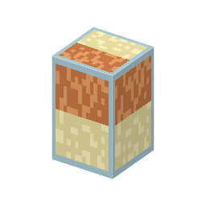

説明
①子ども ベークライトの親戚の樹脂を詰めた塔。水の中に残った塩を取りのぞいて、とてもきれいな水にする。
②学生 ソーダ石灰ガラス6＋陽イオン交換樹脂＋陰イオン交換樹脂で作る。蒸留水を持って右クリックで脱イオン水（8回まで）。陽イオン側が尽きたら硫酸、陰イオン側が尽きたら水酸化ナトリウムを持って右クリックで再生。
③大人 陽イオン交換で金属イオンを H+ に、陰イオン交換で塩化物イオンなどを OH- に入れ替え、H+ と OH- が水になる。蒸留では取れない、ほんの少し残ったイオンまで取れる。
④ガチ 1950年代から、半導体工場はイオン交換で作った純水でウェハーを洗うようになった。今の超純水の工場は、逆浸透膜・イオン交換・紫外線などを何段も重ねる（[2-18]）。